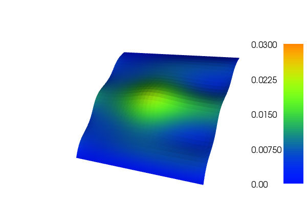

13. Poisson equation with periodic boundary conditions¶
This demo is implemented in a single Python file,
demo_periodic.py, which contains both the variational form
and the solver.
This demo illustrates how to:
- Solve a linear partial differential equation
- Read mesh and subdomains from file
- Create and apply Dirichlet and periodic boundary conditions
The solution for u in this demo will look as follows:
13.1. Equation and problem definition¶
The Poisson equation is the canonical elliptic partial differential equation. For a domain \(\Omega \subset \mathbb{R}^n\) with boundary \(\partial \Omega = \Gamma_{D} \cup \Gamma_{P}\), the Poisson equation with particular boundary conditions reads:
Here, \(f\) is a given source function. The most standard variational form of Poisson equation reads: find \(u \in V\) such that
where \(V\) is a suitable function space and
The expression \(a(u, v)\) is the bilinear form and \(L(v)\) is the linear form. It is assumed that all functions in \(V\) satisfy the Dirichlet boundary conditions (\(u = 0 \ {\rm on} \ \Gamma_{D}\)).
In this demo, we shall consider the following definitions of the input functions, the domain, and the boundaries:
- \(\Omega = [0,1] \times [0,1]\) (a unit square)
- \(\Gamma_{D} = \{(x, 0) \cup (x, 1) \subset \partial \Omega\}\) (Dirichlet boundary)
- \(\Gamma_{P} = \{(0, y) \cup (1, y) \subset \partial \Omega\}\) (Periodic boundary)
- \(f = x \sin(5.0 \pi y) + \exp(-((x - 0.5)^2 + (y - 0.5)^2) / 0.02)\) (source term)
13.2. Implementation¶
This demo is implemented in a single file,
demo_periodic.py.
First, the dolfin module is imported
from dolfin import *
A subclass of Expression,
Source, is created for the source term f. The function
eval() returns values
for a function at the given point x.
# Source term
class Source(Expression):
def eval(self, values, x):
dx = x[0] - 0.5
dy = x[1] - 0.5
values[0] = x[0]*sin(5.0*DOLFIN_PI*x[1]) \
+ 1.0*exp(-(dx*dx + dy*dy)/0.02)
To define the boundaries, we create subclasses of the class
SubDomain. A simple Python
function, returning a boolean, can be used to define the subdomain for
the Dirichlet boundary condition (\(\Gamma_D\)). The function
should return True for those points inside the subdomain and False for
the points outside. In our case, we want to say that the points
\((x, y)\) such that \(y = 0\) or \(y = 1\) are inside of
\(\Gamma_D\). (Note that because of round-off errors, it is often
wise to instead specify \(y < \epsilon\) or \(y > 1 -
\epsilon\) where \(\epsilon\) is a small number (such as machine
precision).)
# Sub domain for Dirichlet boundary condition
class DirichletBoundary(SubDomain):
def inside(self, x, on_boundary):
return bool((x[1] < DOLFIN_EPS or x[1] > (1.0 - DOLFIN_EPS)) \
and on_boundary)
The periodic boundary is defined by PeriodicBoundary and we define
what is inside the boundary in the same way as in
DirichletBoundary. The function map maps a coordinate x in
domain H to a coordinate y in the domain G, it is used for
periodic boundary conditions, so that the right boundary of the domain
is mapped to the left boundary. When the class is defined, we create
the boundary by making an instance of the class.
# Sub domain for Periodic boundary condition
class PeriodicBoundary(SubDomain):
# Left boundary is "target domain" G
def inside(self, x, on_boundary):
return bool(x[0] < DOLFIN_EPS and x[0] > -DOLFIN_EPS and on_boundary)
# Map right boundary (H) to left boundary (G)
def map(self, x, y):
y[0] = x[0] - 1.0
y[1] = x[1]
A 2D mesh is created using the built-in class
UnitSquareMesh, and we
define a finite element function space relative to this space. Notice
the fourth argument of FunctionSpace. It specifies that all functions
in V have periodic boundaries defined by pbc. Also notice that
in order for periodic boundary conditions to work correctly it is necessary
that the mesh nodes on the periodic boundaries match up. This is automatically
satisfied for UnitSquareMesh
but may require extra care with more general meshes (especially externally
generated ones).
# Create mesh and finite element
mesh = UnitSquareMesh(32, 32)
V = FunctionSpace(mesh, "CG", 1, constrained_domain=PeriodicBoundary())
Now, we create the Dirichlet boundary condition using the class
DirichletBC. A
DirichletBC takes three arguments: the function
space the boundary condition applies to, the value of the boundary
condition, and the part of the boundary on which the condition
applies. In our example, the function space is V, the value of the
boundary condition (0.0) can be represented using a
Constant and the
Dirichlet boundary is defined by the class DirichletBoundary. The
definition of the Dirichlet boundary condition then looks as follows:
# Create Dirichlet boundary condition
u0 = Constant(0.0)
dbc = DirichletBoundary()
bc0 = DirichletBC(V, u0, dbc)
When all boundary conditions are defined and created we can collect them in a list:
# Collect boundary conditions
bcs = [bc0]
Here only the Dirichlet boundary condition is put into the list
because the periodic boundary condition is already applied in the
definition of the function space. Next, we want to express the
variational problem. First, we need to specify the trial function u
and the test function v, both living in the function space V. We do
this by defining a TrialFunction and a
TestFunction on
the previously defined FunctionSpace V. The source function f is
created by making an instance of Source. With these ingredients, we
can write down the bilinear form a and the linear form L (using UFL
operators). In summary, this reads
# Define variational problem
u = TrialFunction(V)
v = TestFunction(V)
f = Source(degree=1)
a = dot(grad(u), grad(v))*dx
L = f*v*dx
Now, we have specified the variational form and can consider the solution of the variational problem. First, we need to define a Function u to represent the solution. (Upon initialization, it is simply set to the zero function.) A Function represents a function living in a finite element function space. Next, we can call the solve function with the arguments a == L, u and bcs as follows:
# Compute solution
u = Function(V)
solve(a == L, u, bcs)
The function u will be modified during the call to solve. The default settings for solving a variational problem have been used. However, the solution process can be controlled in much more detail if desired.
A Function can be manipulated in various ways, in particular, it can be plotted and saved to file. Here, we output the solution to a VTK file (using the suffix .pvd) for later visualization and also plot it using the plot command:
# Save solution to file
file = File("periodic.pvd")
file << u
# Plot solution
plot(u, interactive=True)
13.3. Complete code¶
from dolfin import *
# Source term
class Source(Expression):
def eval(self, values, x):
dx = x[0] - 0.5
dy = x[1] - 0.5
values[0] = x[0]*sin(5.0*DOLFIN_PI*x[1]) \
+ 1.0*exp(-(dx*dx + dy*dy)/0.02)
# Sub domain for Dirichlet boundary condition
class DirichletBoundary(SubDomain):
def inside(self, x, on_boundary):
return bool((x[1] < DOLFIN_EPS or x[1] > (1.0 - DOLFIN_EPS)) \
and on_boundary)
# Sub domain for Periodic boundary condition
class PeriodicBoundary(SubDomain):
# Left boundary is "target domain" G
def inside(self, x, on_boundary):
return bool(x[0] < DOLFIN_EPS and x[0] > -DOLFIN_EPS and on_boundary)
# Map right boundary (H) to left boundary (G)
def map(self, x, y):
y[0] = x[0] - 1.0
y[1] = x[1]
# Create mesh and finite element
mesh = UnitSquareMesh(32, 32)
V = FunctionSpace(mesh, "CG", 1, constrained_domain=PeriodicBoundary())
# Create Dirichlet boundary condition
u0 = Constant(0.0)
dbc = DirichletBoundary()
bc0 = DirichletBC(V, u0, dbc)
# Collect boundary conditions
bcs = [bc0]
# Define variational problem
u = TrialFunction(V)
v = TestFunction(V)
f = Source(degree=1)
a = dot(grad(u), grad(v))*dx
L = f*v*dx
# Compute solution
u = Function(V)
solve(a == L, u, bcs)
# Save solution to file
file = File("periodic.pvd")
file << u
# Plot solution
plot(u, interactive=True)